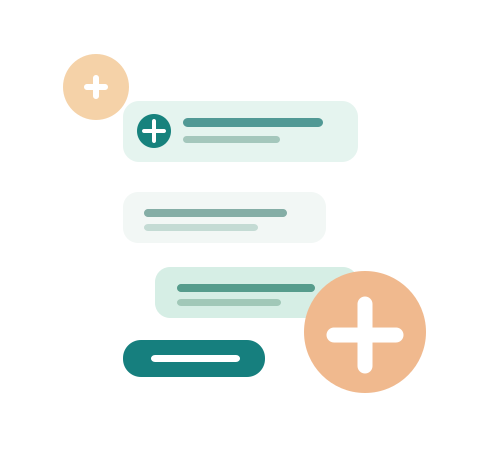

Everyday health concerns
Find general guidance on headaches, stomachaches, cold symptoms, nosebleeds, and minor injuries.
Meet Clinic Companion, a friendly AI-powered resource that helps teachers and school staff navigate everyday student health questions—so everyone feels more prepared to support students.

Classrooms are busy. Clinic Companion makes general school-health reference information easier to find while keeping the school nurse at the center of health decisions.
Find general guidance on headaches, stomachaches, cold symptoms, nosebleeds, and minor injuries.
Understand which warning signs call for prompt nurse involvement or immediate emergency procedures.
Get straightforward answers based on school-health reference materials, not guesswork or diagnoses.
From a quick question during a lesson to knowing when to involve the nurse, Clinic Companion helps school staff take the appropriate next step.
A short AI-generated look at how teachers can use Clinic Companion for everyday school-health questions.
Clinic Companion in the classroom.
Choose a common classroom concern for general first steps and referral guidance. For individual decisions, always follow school procedures and contact the nurse.
For a mild headache, allow a short supervised rest if appropriate, provide access to drinking water, and ask whether the student has eaten.
Contact the nurse if symptoms persist, worsen, follow a head injury, or interfere with class. Sudden severe headache with confusion, weakness, fainting, or seizure needs emergency assessment.
Creative X-Factor: The interactive Student Health Quick Guide lets school staff select common symptoms and instantly view basic classroom support steps and when to contact the nurse. It makes information easier to access and adds a practical, hands-on feature to the website.
Ask a general school-health question, or learn more about the project behind the tool.
Learn More →